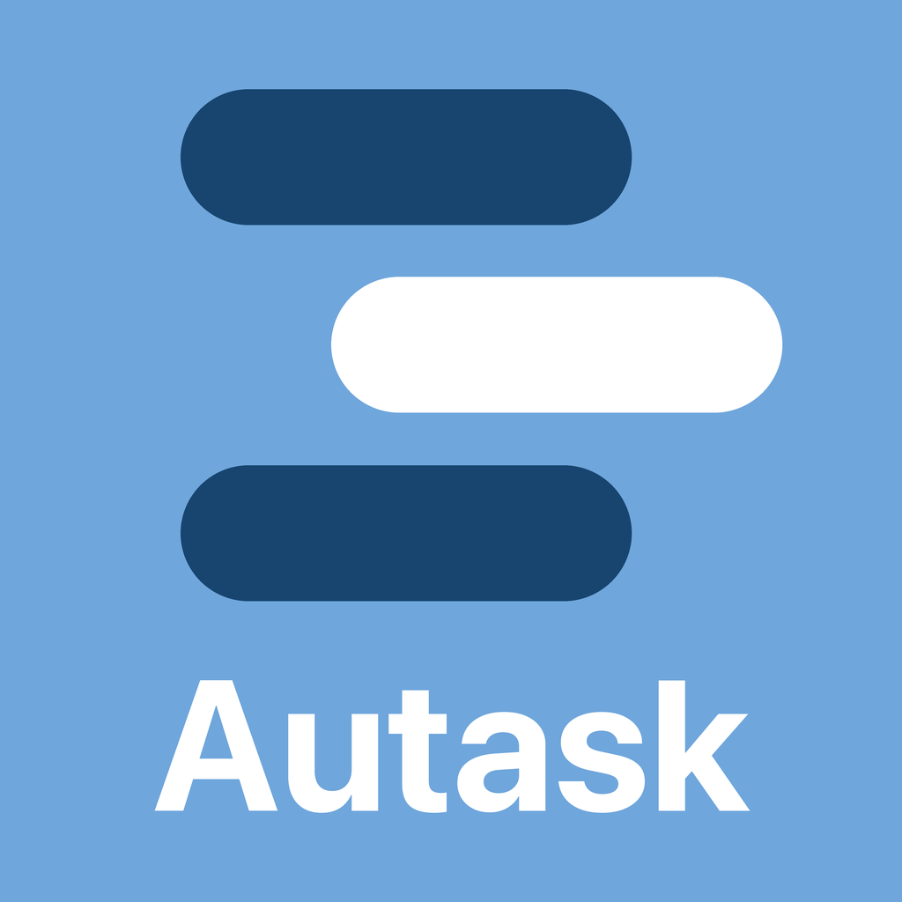

ひとりで、iOS アプリと Web サービスをつくっています。
AIが先に読んで、必要なメールだけを届ける。
App Store ↗iPhone・iPad・Mac

登録したタスクが、Googleカレンダーに自動で入る。
iPhone 10月公開予定
過去問800問、午後の記述式もAIが採点。
基本情報技術者試験の対策を、AIがサポート。
iPhone 11月公開予定
名前を呼ぶと応える、Macに常駐する音声AI。会話もMacの操作も検索もこなす。
GitHub ↗ソース公開・MIT
遊びや旅行をプランで登録・紹介するサービス。
ikoh.click ↗